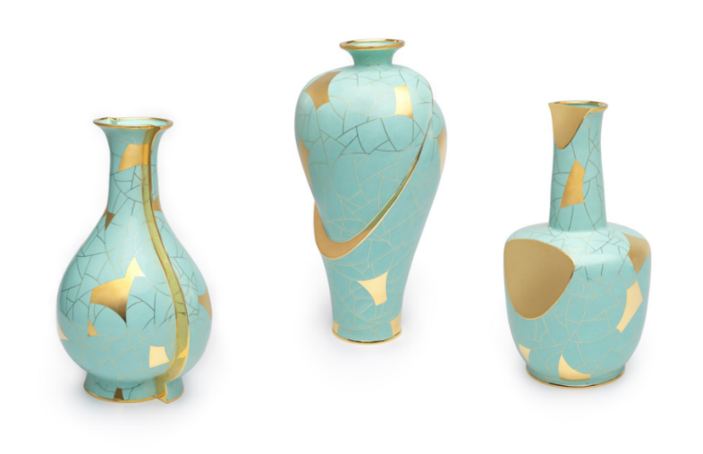

中国掐丝珐琅传承网
中国掐丝珐琅传承网
00
-
00
-
00
中国掐丝珐琅传承网
来源：“淄博陶琉汇” 微信公众号
2022.12.07
历史悠久的珐琅艺术自欧洲伊始，元代时期经由阿拉伯地区沿丝绸之路传入中国，自传入之始便深深扎根于中国传统文化，色彩承袭中国绘画的沉稳、大气的艺术风貌，工艺、造型、装饰等广泛取材于青铜器、金银器、陶瓷等工艺门类，集众长于一身，促生了我国特有的景泰蓝工艺形态。作为“古丝绸之路”中外文化交流的结晶，数百年来景泰蓝一直被奉为“礼之重器”。近年来它又频频作为国礼亮相，成为代表中国文化的“国家名片”。
近年来，越来越多的艺术家将视线投向景泰蓝艺术，除了其精巧绝伦的传统技艺外，艺术家们试图将景泰蓝艺术与其他艺术形式相融合，推动景泰蓝艺术在当代语境下的活性发展，为景泰蓝艺术勾勒出更为广阔的天地。6月8日至6月28日，“守正·创新——北京国际当代珐琅艺术展”在中华世纪坛艺术馆综合展厅展出，本次展览以“守正·创新”为主题，力求促进传统珐琅艺术创造性转化与创新性发展的同时，积极推动珐琅艺术在多元文化中的交流共鉴。
如何使传统工艺美术在新的时代背景下焕发新的生命力，需要在传承传统技艺与文化内涵的同时，回应时代需求，注重新材质新工艺的艺术化呈现与新语境下审美价值的融入，坚持在传承中发展，在守正中创新，进而带来新的艺术语言与艺术样态。对于珐琅艺术这个有着本土基因的舶来品，工艺美术大师、珐琅艺术家、高等院校与行业从业者如何集思广益，推动珐琅艺术在当代语境下的创造性转化与创新性发展？作为“一带一路”中西文化交流的见证，珐琅艺术在沟通中西文明过程中又有着怎样的作用？《中国美术报》特别邀请“守正·创新——北京国际当代珐琅艺术展”策展人王晓昕，为大家分享珐琅艺术中西融合、创新发展的时代历程。

王晓昕，现任清华大学美术学院工艺美术系党支部书记、副教授，金属艺术工作室负责人，硕士生导师。中国工艺美术协会金属艺术专业委员会驻会副秘书长，清华大学传统材料与工艺文化部重点实验室研究员，北京工艺美术学会理事。
主要研究内容在于：在艺术、设计、工艺美术之间，探索金属艺术的可能性与无限性；在数字化技术与传统工艺的融合碰撞中，以艺术家的敏锐引领时代新风；在学院和行业互相融合的过程中，寻找当代工艺美术发展的第三条道路。
近年来，执着于3D打印等新造物技术与锻造、铸造等传统造物手段之间的协同关系，探讨3D打印技术与传统手工艺在成型方式、设计伦理及审美重构方面的某种内在联系。其作品在国内外展览和比赛中多次参展并获奖，学术文章发表于《装饰》、《美术观察》等杂志，主持并参与多项国家级、省部级研究课题。
答：此次展览主题为“守正·创新”，是对推进中华优秀传统文化创造性转化、创新性发展的践行。在我看来，“守正”即创造性转化，“创新”即创新性发展。依据这个思路，我将“守正·创新——北京国际当代珐琅艺术展”分为四个单元：“守正经典”、“礼之重器”、“时代风韵”、“华彩世界”。
答：“守正经典”单元展出了以张同禄、霍铁辉、戴嘉林、米振雄、钟连盛、刘永森等六位国家级景泰蓝工艺美术大师为代表的经典景泰蓝作品，将传统景泰蓝艺术中蕴藏的美学观念、造物思想及人文精神等呈现于观众面前。“礼之重器”单元展示了自1950年代至今由景泰蓝工艺制作的国礼作品，以此彰显当代中国审美旨趣、传播当代中国价值观念，成为中国与世界交流的见证。“时代风韵”单元呈现了当代珐琅艺术在充分挖掘中华优秀传统文化的基础上，将中华美学精神和当代审美追求相结合，坚持在传统中发展，在守正中创新。“华彩世界”单元呈现了来自12个国家的27套作品，集中展现了当今世界代表性的珐琅作品。
答：“礼之重器”单元的开篇就是这件国礼。中华人民共和国成立之初，景泰蓝工艺试图寻求新的突破，但作为国礼它依然要坚守传统景泰蓝艺术的工艺美学精神，保持着景泰蓝的特色，所以景泰蓝国礼只做了一些局部的调整和修正，使之具有一定的现代性和更强的传播性。值得注意的是，新时代的景泰蓝国礼，它要守住的传统是中华五千年文明，而不局限于传统工匠式的传承，只针对工艺的代代相传。两者继承传统经典的出发点已发生变化。
首先，“仿古”贯穿了景泰蓝的整个发展历程，比如对历代陶瓷及青铜器的模仿。当下的景泰蓝作品依然有着仿古的特色。作为2014年北京APEC峰会领导人的赠礼，《四海升平》景泰蓝赏瓶以藏于北京故宫博物院的霁红釉玉壶春瓶为原型创作完成，赏瓶纹样以敦煌莫高窟藻井上的宝相花为设计基础，并借鉴中国青花瓷效果重新创作而成。值得注意的是，装饰上以往程式化的如宝相花、龙凤纹、云纹等图案融入了新的元素。如常沙娜先生的《和平鸽》大圆盘就选用了敦煌纹样做装饰。而我创作的《战疫鼎》，造型取自中国传统青铜器——鼎，鼎身主体部分的装饰题材选自全国各族人民共同抗击新冠疫情的英雄事迹。
其次，多种材质多种工艺的跨界融合也是景泰蓝创新的重要路径。钱美华、钟连盛、李静创作的《和平尊》就是景泰蓝、花丝镶嵌以及錾铜工艺相结合的成果，此外，瓶身上还镶嵌了青金石、木变石、玛瑙、松石等。施君为英国女王伊丽莎白登基60周年设计制作的《女王御座》，座椅整体造型为传统的欧式座椅，主体骨架为铜胎掐丝珐琅，与传统珐琅不同的是，所有的掐丝都是由白铜丝代替紫铜丝完成，此外，艺术家团队还研发出了凹凸效果的花丝工艺，釉面较低，铜丝较高，使得整体花饰的立体感更为强烈。施君使用传统的中国工艺来表达出西方的文化，中西融合的设计理念使这件作品成为当代珐琅艺术的代表之作。
形式跨界、工艺跨界、材料跨界让当代珐琅艺术在现代设计的影响之下，更容易将中国文化的观念，用一种现代人能够接受和理解的方式重新演绎出来。
答：首先是审美层面。传统珐琅的特色在于装饰繁复、颜色丰富、雍容华贵，到了现代，艺术家希望能够用另外一种方式重新审视珐琅，可以不用那么多颜色，装饰上也要节制，没有那种过于雍容华贵的感觉。他们所寻找的就是中国文化中除却宫廷审美、民间审美、宗教审美之外的第四种审美，即文人审美。
申文广的《山水之间》将中国传统文人的审美情趣引入到代表皇家审美的景泰蓝之中，在当代的工艺实践中碰撞出了不一样的火花。他以景泰蓝工艺为载体，以中国传统审美中具有典型文人风骨的太湖石为原型，结合景泰蓝的工艺特点进行重新解构、再造，再以宋瓷中极富代表性的开片纹理为装饰元素，从而将自然造物的奇石以釉料自然裂变的开片来进行装饰，展示了中国文人的风骨和雅趣。
我的作品《文以铸魂》选取中国传统文化精髓——青瓷意象及梅瓶、玉壶春瓶的经典造型，采用景泰蓝工艺，创造性地加上当代艺术的解构与重塑方式，结合陶瓷开片、修补的效果痕迹，使古老的工艺品类展示出与以往不同的魅力。这一创作旨在表现中华传统文化在新时代的创造性转化与创新性发展，展示古老文明在现代社会与新技术、新工艺碰撞焕发出新的生机与活力。
很多。比如银与珐琅的跨界运用、传统釉料的开发以及制作工艺的创新。绝大部分珐琅是以金属为底，铜是珐琅制品中运用最广泛的金属材料，但在现代珐琅礼品设计中，多有银与珐琅的跨界运用。
熊松涛的《流光溢彩》选用纯度高达99.99%的白银做胎底，运用银胎掐丝珐琅工艺制作完成，用两种不同的银丝展现花卉，增加了图案的层次感。就釉料来说，熊氏珐琅主要使用欧洲等地的进口珐琅釉料，再添加青金、玛瑙或者石英等物，通过调配产生不同的釉色，釉料本身也更加温润透明，美感更强，珐琅颜色也由曾经的100多种拓展到如今的600多种。
制作工艺上，除了采用传统的掐丝技法之外，金属丝线可使用显微镜、CAD＆CAM（计算机辅助设计和计算机辅助制造系统）或金属蚀刻工艺进行呈现，也可以在景泰蓝的制胎技术中引进3D打印技术，把制胎和掐丝合二为一。由北京市珐琅厂钟连盛大师为代表的团队设计的《大师系列－掐丝珐琅腕表》，每一个表盘需要技师们在60倍显微镜下用直径0.045的纯金、纯银扁丝掐丝、点釉完全纯手工制作而成。
答：首先，当代珐琅艺术多是小体量。因为传统景泰蓝的制作工艺繁复，技术含量较高，需要匠人分工序进行流水线作业完成。而当代珐琅艺术多为艺术家个体独立完成，背后没有庞大的团队来支撑，很难制作大体量的作品。但这并不意味着当代珐琅艺术就不优秀，陈敏、杨中雄的《逝》将金属丝线作为艺术语言进行创作，并用极为高超的掐丝工艺完成，作品富有设计感的同时也不乏技术含量。
其次，当代珐琅艺术有着日常生活化的发展倾向。近年来，景泰蓝制品不仅作为收藏品，更是作为一种装饰品出现在日常生活中。大众对于景泰蓝的追求和喜爱，主要呈现在对色彩的选择上，人们更倾向于浅色系的作品。
此外，当代艺术的表现形式、手段与传统工艺相结合。当代珐琅艺术的创作在保留传统文化精髓的前提下，吸收当代艺术的表现形式、手段，对珐琅艺术进行创新设计，使珐琅作品具有时代新品味。韩国艺术家李正琳的《想》，采用水墨的绘画技法，通过珐琅线条的薄厚、尖钝表现人物形象。加拿大艺术家桂莲善的《冬日景色》使用优质钢丝的特性和珐琅技术，以达到春意绵绵的感觉。
答：作为北京的一张文化名牌，在城市建设中我们经常可以看到景泰蓝工艺的身影，如地铁站、博物馆、会议厅等。此次展览中的雁栖湖国际会都集贤厅景泰蓝斗拱（模型）是景泰蓝工艺应用于室内建筑装饰领域的全新尝试。我们目前的任务是如何把这张文化名牌打好，促进北京城市文化建设。同时，让珐琅艺术进入公共空间领域，也意味着工艺难度会加大，这就需要我们研发新工艺，根据需要重新调整设计，这个过程也是珐琅艺术创新的过程。
答：珐琅作为舶来品，13世纪下半叶传入中国后，同中国传统的金属工艺、镶嵌工艺等有机结合，内化为极具代表性的传统工艺景泰蓝。这种在新的地域生发而成的文化载体经过几百年的发展变得异常成熟与稳定，新时代如何打破这种稳定状态是珐琅艺术创新的关键。此次展览通过不同国家的珐琅艺术，向观众展示了珐琅艺术的无限可能性，在文明互动互融的过程中，看到各自的优点与不足，促使我们重新审视对珐琅艺术的理解。
这也是我举办此次展览的初衷，希望通过展览让在中国成熟稳定的珐琅艺术重新动起来，给珐琅艺术带来改变的契机。此外，我还希望通过展览，把珐琅这种由西方传入的工艺，在中国本土成熟后，沿着“一带一路”重新传播回去，让中国文化借着工艺载体反向传播到世界各地。
答：目前我们对于景泰蓝的保护传承工作做得还不够。受城市建设、环境保护等原因，北京传统珐琅厂现已大多迁移至河北等地，现在存留的珐琅厂很难按照传统的方式去生产和实践，也不能最大程度地保留珐琅工艺的原汁原味。这就需要政府部门有针对性地对传统珐琅工厂给予一定的支持。此外，传统珐琅需要创新突破，还是要融入一些现代设计的因素，希望更多的创新人才和艺术家、设计师介入到的这个领域里，这样才能更好地促进现代珐琅艺术的创新。